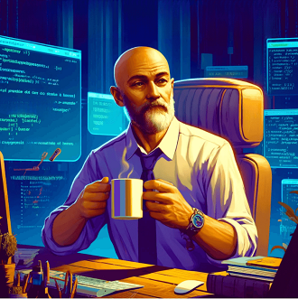

-
Seu Clope

Descricao
Seu Clope é conhecido por sua firme convicção de que as novas linguagens de programação são apenas modismos passageiros e desnecessários, e ele se recusa a adotar qualquer uma delas, alegando que nada pode superar a robustez e a eficácia do COBOL para resolver problemas reais. Seu estilo de trabalho é metódico e preciso, e ele valoriza acima de tudo a estabilidade e a confiabilidade em seu código.
-
Professor Cafeze
Descrição
Líder dos X-devs é um mentor para desenvolvedores iniciantes, guiando-os com sua mente excepcional e uma xícara de café sempre à mão. Ele possui habilidades telepáticas que lhe permitem transmitir conhecimento de programação diretamente para a mente dos novatos, acelerando sua aprendizagem.